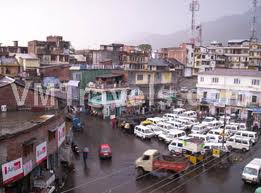
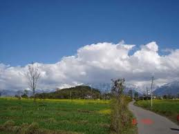
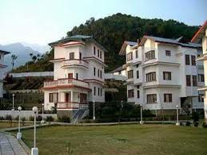
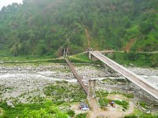
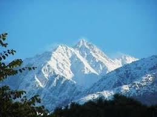
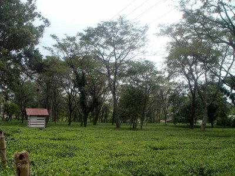
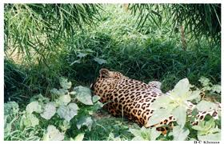
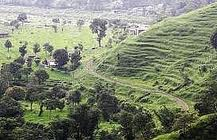

EVOLUTION
Pre-Independence
During the second half of 18th Century, with success of tea estates in Palampur area, the original settlement started developing. In 1888, it was made tehsil headquarter, by shifting the same from Bhawarna. The tea estate owners impressed upon the administration to bring infrastructure like St. Paul's schools, colleges and hospital. It also became a centre of labourers engaged in plucking of tea leaves and packing, transportation and marketing thereof. The earthquake of 1905 left a trail of destruction. Therefore, building style, projections and building material had to be modified. The tehsil complex, school and church towards T-Bud Hotel were built during British Period. Consequent upon laying of railway line for hydro-electric project at Joginder Nagar in 1927 and thereby installation of railway station and staff quarters, construction activity grew fast. Increase in the employment, led to investment in the area, whereby multifarious development including roads took place.
Post Independence
In 1947,Shobha Singh moved from Punjab to Andreta and developed his art gallary. He painted world famous art pieces related to Punjabi culture and shot into prominence as an artist and as a director. After 1946, the regional linkages of town started improving. A Military station got established at a strategic location of the town. Agriculture University got established, besides the establishment of Indian Council for Scientific & Industrial Research (I.C.S.I.R.) Complex (IHBT).[1] Many offices at the level of sub division pertaining to Electricity, Housing Board, Public health and PWD (B&R) were located. tourist accommodation like T-Bud Hotel by Himachal Tourism Development Corporation and other hotels were constructed
